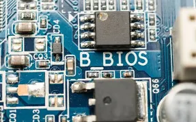
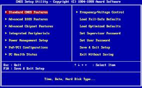

pour que l'ordinateur puisse charger le systéme d'exploitation, une phase de test matériel doit etre franchie avec succés
BOIS
le BIOS (basic input/ output system) est une forme de microprogramme qui indique au systéme d'exploitation de votre ordinateur comment fonctionner correctement .Il contient des instructions sur la maniére de controler divers composants matériels tels que les disque durs, les claviers et les ecrans d'affichage
SETUP

le SETUP d'un ordinateur fait reference a deux choses : le processus initial de démarrage qui initialiser le matériel et charge le systéme d'exploitation, et le programme de configuration (BIOS/UEFI Setup ) qui permet de modifier les paramétre du matériel accessible via une touche spéciale au démarrage, permet de régler des options telles que la date et l'heure, l'ordre de démarrage des périphérique ou les mots de passe.
L'autotest
lors de l'initialisation d'un ordinateurle BIOS va commencer par effectuer un nombre de tests, afin de vérifier si la configuration et le fonctionnement des composants matériels de l'ordinateur sont corrects. cette opération est assurée par le programme POST

chargement de systéme
une fois phrase d'autotest est franchie avec succés, le LE BOIS à travers le prgramme d'amorcage "Boostrap : chargeur d'amorce "lance le chargement du systéme d'exploitation dans le RAM
| avant démarrage du systéme | |
|---|---|
| ROM |
|
| RAM | vide |
| disque systéme | le ystéme d'exploitation |
| aprés démarrage du systéme | |
|---|---|
| ROM |
|
| RAM | le systéme d'exploitation |
| disque systéme | le systéme d'exploitation |